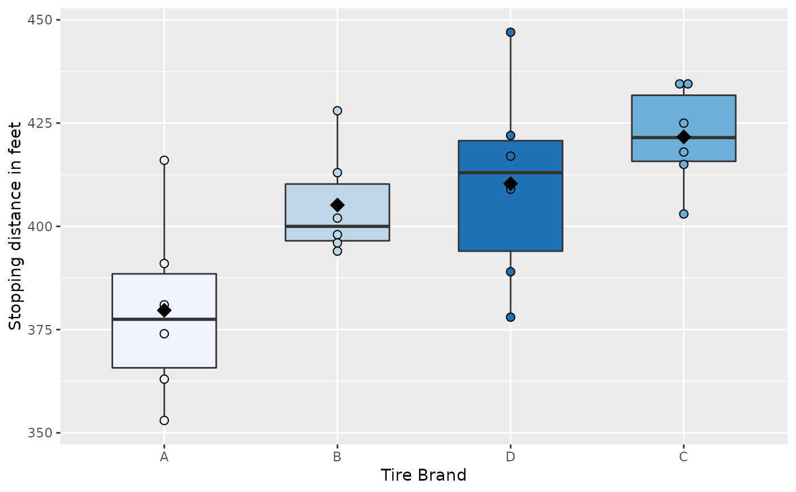

Stopping Distance
The data frame TIRE has the stopping distances measured to the nearest foot for a standard sized car to come to a complete stop from a speed of sixty miles per hour. There are six measurements of the stopping distance for four different tread patterns labeled A, B, C, and D. The same driver and car were used for all twenty-four measurements.
TIRE
Format
A data frame with 24 observations on the following 3 variables:
-
stopdist(stopping distance measured to the nearest foot) -
tire(a factor with levelsA,B,C, andD) -
order(order the experiment was conducted)
References
Ugarte, M. D., Militino, A. F., and Arnholt, A. T. 2015. Probability and Statistics with R, Second Edition. Chapman & Hall / CRC.
Examples
ggplot(data = TIRE, aes(x = reorder(tire, stopdist, FUN = median), y = stopdist, fill = tire)) + geom_boxplot() + guides(fill = FALSE) + labs(y = "Stopping distance in feet", x = "Tire Brand") + scale_fill_brewer()summary(aov(stopdist ~ tire, data = TIRE))#> Df Sum Sq Mean Sq F value Pr(>F) #> tire 3 5673 1891.0 5.328 0.00732 ** #> Residuals 20 7099 354.9 #> --- #> Signif. codes: 0 ‘***’ 0.001 ‘**’ 0.01 ‘*’ 0.05 ‘.’ 0.1 ‘ ’ 1p <- ggplot(data = TIRE, aes(x = reorder(tire, stopdist, FUN = mean), y = stopdist, fill = tire)) p + geom_boxplot(width = 0.6) + geom_dotplot(binaxis = "y", stackdir = "center", binwidth = 2) + guides(fill = FALSE) + scale_fill_brewer() + stat_summary(fun.y = mean, geom = "point", fill = "black", shape = 23, size = 3) + labs(x = "Tire Brand", y = "Stopping distance in feet")